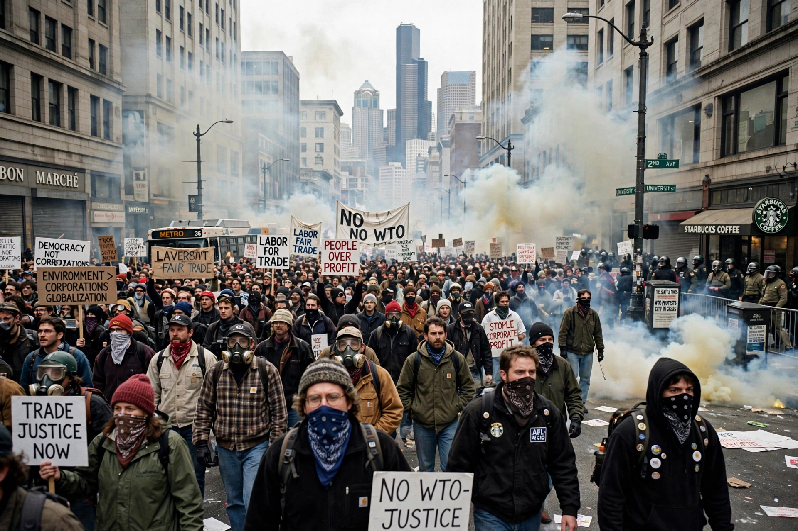

| 1999 Seattle WTO protests | |
|---|---|
 | |
| Date | 30 November – 3 December 1999 |
| Location | Seattle, Washington, United States |
| Participants | ~40,000–60,000 protesters |
| Also known as | "Battle in Seattle"; N30 |
| Outcome | Conference disrupted; ministerial ended without launching a new trade round; ~600 arrests |
The 1999 Seattle WTO protests, sometimes called the Battle in Seattle, were a series of protests surrounding the World Trade Organization (WTO) Ministerial Conference held at the Washington State Convention and Trade Center in Seattle from 30 November to 3 December 1999. The demonstrations — among the largest of the emerging anti-globalization movement — brought together labour unions, environmentalists, consumer advocates, students, and anarchist groups opposed to the WTO's trade policies.
On 30 November ("N30"), tens of thousands of demonstrators blockaded intersections downtown, delaying delegates and forcing cancellation of the opening ceremony, while a permitted labour march drew an estimated 40,000 or more people. A smaller "black bloc" smashed windows of multinational chain stores. Police responded with tear gas, pepper spray, and rubber bullets; the mayor declared a state of emergency and a curfew, and the National Guard was deployed. More than 600 people were arrested over the week. The ministerial itself collapsed amid disagreements between developed and developing nations, closing without launching the planned new round of trade talks.
Seattle is regarded as a watershed for the alter-globalization movement and for protest policing in the United States. The protests were extensively documented by the newly founded Independent Media Center (Indymedia), a landmark in citizen journalism. Litigation over mass arrests and civil-rights violations led to settlements by the City of Seattle, and the police chief resigned.